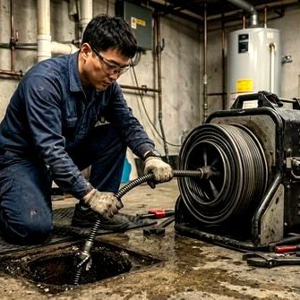
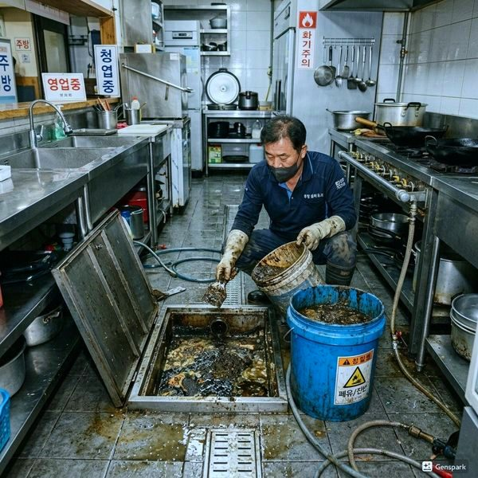

하수구 벌레(나방파리) 완벽 퇴치법
2026년 4월 12일 | 제우스시설관리
화장실이나 주방에서 작고 검은 나방처럼 생긴 벌레를 발견한다면 나방파리(drain fly)입니다. 이 벌레는 배수관 내부의 오물층에서 알을 낳고 번식합니다. 인체에 직접적인 해는 없지만 비위생적이며, 근본 원인을 제거하지 않으면 계속 발생합니다.

나방파리가 서식하는 곳은 배수관 내벽의 바이오필름(유기물 막)입니다. 배관 벽에 쌓인 기름때, 비누 찌꺼기, 머리카락 등이 부패하면서 형성된 점액질 층이 나방파리의 서식지이자 먹이입니다. 이 바이오필름을 제거하지 않으면 살충제를 뿌려도 계속 나옵니다.
응급 처치로 배수구에 끓는 물을 매일 부어주면 일시적으로 개체 수가 줄어듭니다. 베이킹소다 + 식초 + 뜨거운 물 조합도 효과적입니다. 하지만 이는 표면적인 처리일 뿐, 배관 깊숙이 쌓인 바이오필름은 제거할 수 없습니다.

근본적인 해결은 고압세척기를 이용한 배관 세척입니다. 150bar 이상의 고압 수류로 배관 내벽의 바이오필름을 완전히 제거하면 나방파리 서식지 자체가 사라집니다. 제우스시설관리는 세척 전 내시경 카메라로 오염 상태를 확인하고, 세척 후 다시 촬영하여 결과를 보여드립니다.

예방을 위해 미사용 배수구에 주 1회 물을 부어 트랩 봉수를 유지하고, 배수구 거름망을 사용하세요. 벌레가 지속적으로 발생한다면 전문 배관 세척이 필요합니다. 28분 내 출동, 전화: 010-4406-1788